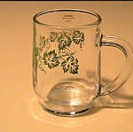

[Update] Die Liste aller bisher eingegangen Getränke wird ab sofort permanent hier geführt.
Abgesehen von Kampusch und Fritzl haben wir Österreicher noch etwas, worauf wir besonders … hmm … stolz sein können: Unsere Drinkkultur.
Wir sind nicht nur die Erfinder und Erhalter der althergebrachten Tradition des Komasaufens; Alkohol stellt das grundlegende Fundament unserer Gesellschaft dar. Ohne wären wir vermutlich schon lange im Bürgerkrieg versunken, denn was etwa hätte ich als Oberösterreicher schon mit einem Wiener gemeinsam, gäbe es da nicht unsere geteilte Leidenschaft?
{kind=link}
Bevor ich nun endgültig als schwerer Alkoholiker abgestempelt werde, der Sinn meiner wortgewaltigen Einleitung: Neben Alkohol hat Österreich noch etwas Erhaltenswertes – die Sprache. Jedes unserer Viertelchen hat ihre eigene, ganz besonders (ah, hier ist der rote Faden) was unser vielfältiges Getränke-Ökosystem betrifft.
Ich erinnere mich noch gut an meinen ersten Besuch in Niederösterreich, wo ich, nichts Böses ahnend, einen siaßn Gspritztn bestellt und statt eines schmackhaften Weinmischgetränks bloß einen fragenden Blick geerntet habe. Um so etwas in Zukunft zu vermeiden, möchte ich eine Art Enzyklopädie des Pippalns zusammenstellen: Eine Auflistung aller mehr oder weniger kreativen, mehr oder weniger bekannten Namen für Getränke in Österreich.
Und ich möchte den geneigten Leser bitten, mir zu helfen. Bitte füge deine Getränkenamen und -bezeichnungen als Kommentar hinzu, ich werde sie sammeln, zusammenstellen und veröffentlichen. Und ich beginne, als Denkanstoß, gleich mal mit ein paar:
[Update] Auflistung entfernt, da die gesammelte Liste bereits hier verfügbar ist.
Vielleicht solltest auch dazuschreiben womit der Alkohol gemischt wird. Radler != Radler (Mit Sprite/Zitrone, Mit Fanta oder Mit Almdudler). Und Siaßa Gspritzter is auch nicht überall gleich.
Du hast das wichtigste Getränke in der Kategorie „Mit Wein“ vergessen: Cola Weiß!!!
Mein Beitrag zur Kategorie „Mit Bier“: Menü (= Bier mit Red Bull)
Und dann noch etwas zur Kategorie „Uns Sonst“: weißes Flügerl (= weißer Wodka mit Red Bull).
Und ich finde auch, dass du dazuschreiben sollstes was womit gemischt wird!
Übrigens: ich wollte mal in Hamburg an Siaßn Gspritztn und hab mir eine Süße Weinschorle bestellt. Als Antwort bekam ich, dass sie leider keinen Süßwein lagernd haben!
Ein „Diesel“ ist ein Bier mit Cola in Kärnten oder Steiermark.
gspritzer Most
mischung – gspritzter in da steiermark
donauwasser – eistee mit vodka
hoibe vs. krügerl vs. großes bier.
nicht gerade spektakulär, gehört aber auch gesagt.
Kaiserspritzer – Gespritzter mit Hollundersirup
Nicht wegzudenken aus der NÖ Heurigenkultur
Burgenland:
roter Bonanza – Cola Rot
weißer Bonaza – Cola Weiß
Tiroler – Almdudler Weiß
Palermo – 1/8 Wein auf 1/2 aufgspritzt
Spritzer – Wein mit Soda
Mischung – Wein mit Mineralwasser
3er Mischung – Wein mit Soda und Almdudler oder Red Bull
Diesel – Bier mit Cola
Himmeltraktor – Almdudler mit Rum
spritzer mit holundersirup? horcht si ja extremst gut an – muss i glei amoi probieren 😉
@Wein
LitaLita = beim Heirigen …
CW (sprich: zeh wäh) = cola weiß
VB (sprich: fau bäh != VisualBasic) = vodka bull
Schledara (Mosthüttenbergerisch) = G’spritza mit mehr wasser als wein ..
Bier:
tüte, tüterl, hüsen, aluweckerl
Cappy Vodka = Vodka + Orangensaft
Cappy Malibu
Jacky Cola = Cola + Jack Daniel’s
Cola Rum
… wow please don’t judge me
fast lauter Mädchengetränke 🙂
Kenn ich aber eh nur vom Hörensagen *grins*
achja und: da kommen ja so manche greisligen Absurditäten zum Vorschein („Wein mit Soda und Almdudler oder Red Bullll“ !??! wtf is wrong with you people…)
Danke für alle Kommentare so weit 🙂
Eine Liste aller Getränke ist ab sofort permanent unter http://www.randominsights.net/trinkkultur-in-osterreich/ zu finden.